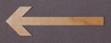
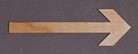

Théo (Respo Clubs)


Theo CORTES, CM3 et provenant du fin fond de sa campagne picarde, ancien PT et ravi d'avoir fini dans une si belle école.
Toujours là pour s'impliquer davantage dans l'associatif c'est tout naturellement qu'il s'est dirigé vers le poste de Respo Club.